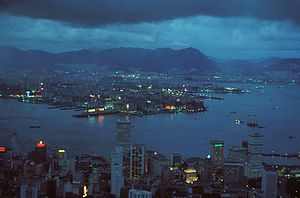

History
1950s
Skills and capital brought by refugees of Mainland China, especially from Shanghai, along with a vast pool of cheap labour helped revive the economy. At the same time, many foreign firms relocated their offices from Shanghai to Hong Kong. Enjoying unprecedented growth, Hong Kong would transform from a territory of entrepot trade to one of industry and manufacturing. The early industrial centres, where many of the workers spent the majority of their days, turned out anything that could be produced with small space from buttons, artificial flowers, umbrellas, textile, enamelware, footwear to plastics.
Large squatter camps developed throughout the territory providing homes for the massive and growing number of immigrants. The camps, however, posed a fire and health hazard, leading to disasters like the Shek Kip Mei fire. Governor Alexander Grantham responded with a "multi storey buildings" plan as a standard. It was the beginning of the high rise buildings. Conditions in public housing were very basic with several families sharing communal cooking facilities. Other aspects of life would change as traditional Cantonese opera gave way to big screen cinemas. The tourism industry would begin to formalise. North Point was known as "Little Shanghai" , since in the minds of many, it has already become the replacement for the surrendered Shanghai in China.
{kind=link}
1960s
The manufacturing industry opened a new decade employing large sections of the population. The period is considered a turning point for Hong Kong's economy. The construction business would also be revamped with new detailed guidelines for the first time since World War II. While Hong Kong started out with a low GDP, it would use the textile industry as the foundation to boost the economy. China's cultural revolution would put Hong Kong on a new political stage. Events like the 1967 riot would fill the streets with home-made bombs and chaos. Bomb disposal experts from the police and the British military defused as many as 8,000 home-made bombs. One in every eight bombs were genuine.
Family values and Chinese tradition would be challenged like never before as people spent more time in the factories than at home. Other features of the period included water shortages, long working hours coupled with extremely low wages. The Hong Kong Flu of 1968 would infect 15% of the population. Amidst all the struggle, "Made in Hong Kong" went from a label that marked cheap low-grade products to a label that marked high-quality products.
{kind=link}
1970s
1970s, Hong kong government extend funded education from six to nine years, and the set up the Hong Kong's country parks system.
The opening of the mainland Chinese market and rising salaries drove many manufacturers north. Hong Kong consolidated its position as a commercial and tourism centre in the South-East Asia region. High life expectancy, literacy, per-capita income and other socioeconomic measures attest to Hong Kong's achievements over the last four decades of the 20th Century. Higher income also led to the introduction of the first private housing estates with Taikoo Shing. The period saw a boom in residential high rises, many of the people's homes became part of Hong Kong's skyline and scenery.
In 1974, Murray McLehose founded ICAC, the Independent Commission Against Corruption, in order to combat corruption within the police force. The extent of corruption was so widespread that a mass police petition took place resisting prosecutions. Despite early opposition to the ICAC by the police force, Hong Kong was successful in its anti-corruption efforts, eventually becoming one of the least corrupt societies in the world.
{kind=link}
1980s
In 1982, the British Prime Minister, Margaret Thatcher, hoped that the increasing openness of the PRC government and the economic reform in the mainland would allow the continuation of British rule. The resulting meeting led to the signing of Sino-British Joint Declaration and the proposal of the One country, two systems concept by Deng Xiaoping. Political news dominated the media, while real estate took a major upswing. The financial world would also be rattled by panics, leading to waves of policy changes and Black Saturday. Meanwhile Hong Kong was now recognised as one of the wealthiest representatives of the far east. At the same time, the warnings of the 1997 handover raised emigration statistics to historic highs. Many would leave Hong Kong for the United States, Canada, the United Kingdom, Australia, and any other destination with no communist influence.
Hong Kong's Cinema would enjoy one paramount run that would put it on the international map. Some of the biggest names included Jackie Chan and Chow Yun-fat. The music world also saw a new group of cantopop stars like Anita Mui and Leslie Cheung. But everything seemed to be overshadowed by an uncertainty of the future.
{kind=link}
1990s
On 4 April 1990, the Hong Kong Basic Law was officially accepted as the mini-constitution of the Hong Kong SAR after the handover. The pro-Beijing bloc welcomed the Basic Law, calling it the most democratic legal system to ever exist in the PRC. The pro-democratic bloc criticised it as not democratic enough. In July 1992, Chris Patten was appointed as the last British Governor of Hong Kong. Patten had been Chairman of the Conservative Party in the UK until he lost his parliamentary seat in the general election earlier that year. Relations with the PRC government in Beijing became increasingly strained, as Patten introduced democratic reforms that increased the number of elected members in the Legislative Council. This caused considerable annoyance to the PRC, which saw this as a breach of the Basic Law. On 1 July 1997 Hong Kong was handed over to the People's Republic of China by the United Kingdom. The old Legislative Council, elected under Chris Patten's reforms, was replaced by the Provisional Legislative Council elected by a selection committee whose members were appointed by the PRC government. Tung Chee Hwa, elected in December by a selection committee with members appointed by the PRC government, assumed duty as the first Chief Executive of Hong Kong.
{kind=link}
2000s
The new millennium signalled a series of events. A sizeable portion of the population that was previously against the handover found itself living with the adjustments. Article 23 became a controversy, and led to marches in different parts of Hong Kong with as many as 750,000 people out of a population of approximately 6,800,000 at the time. The government also dealt with the SARS outbreak in 2003. A further health crisis, the Bird Flu Pandemic (H5N1) gained momentum from the late 90s, and led to the disposal of millions of chickens and other poultry. The slaughter put Hong Kong at the centre of global attention. At the same time, the economy tried to adjust fiscally. Within a short time, the political climate heated up and the Chief Executive position would be challenged culturally, politically and managerially. Hong Kong Disneyland was also launched during this period.
Hong Kong's skyline has continued to evolve, with two new skyscrapers dominating. The 415 meter (1,362 foot) tall, 88 storey Two International Finance Centre, completed in 2003, previously Hong Kong's tallest building, has been eclipsed by the 484 meter (1,588 foot) tall, 118 storey International Commerce Centre, which was topped-out in 2010. Nine additional skyscrapers over 250 meters (825 feet) have also been completed during this time. [1] The tallest building at the moment in Hong Kong is the ICC building, in West Kowloon.
{kind=link}
Source:http://en.wikipedia.org/wiki/History_of_Hong_Kong